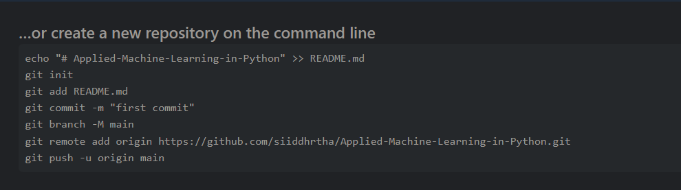

Create Remote Repository on GitHub.com
Download Git
1.Download Installer
2.Install Git
3.Check Git version
Create Local Repository

• git init- Initialize local a new repository
• git status- shows what you have in you staging area
• git add- adds files and folders to the staging area
• git commit - commits files in staging area to local repository
• git push- Takes a local repository and pushes to a remote - - repository (Github).
• Create a repo on github
• set a remote
• Add your github credentials
• git pull- Pull latest changes from remote repository
• git clone- Clone repo from github
Ignoring files: Add a .gitignore file and write in the file or folder name you want to ignore.
Clone a repo: copy the url of the repo you want to clone and simply run git clone